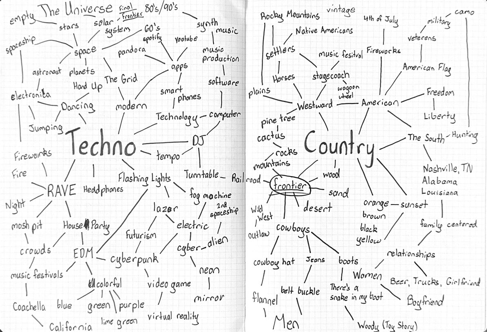
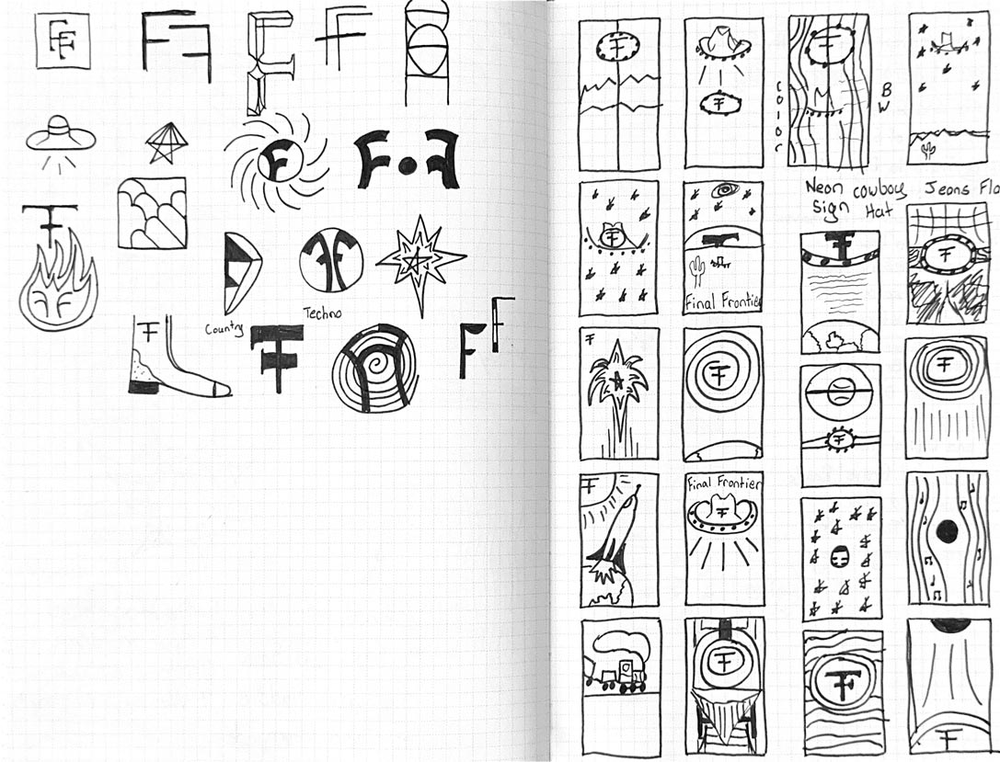
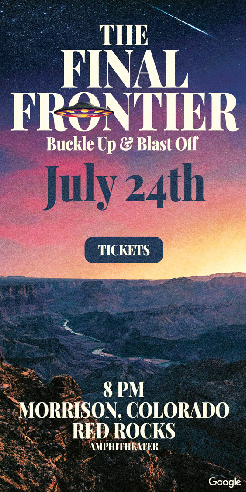
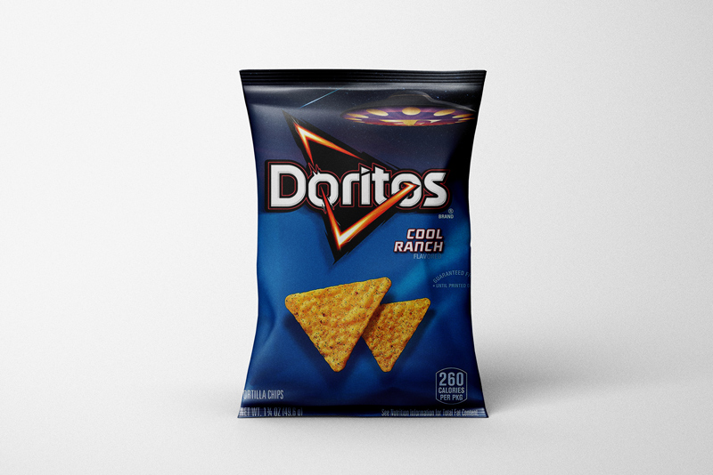
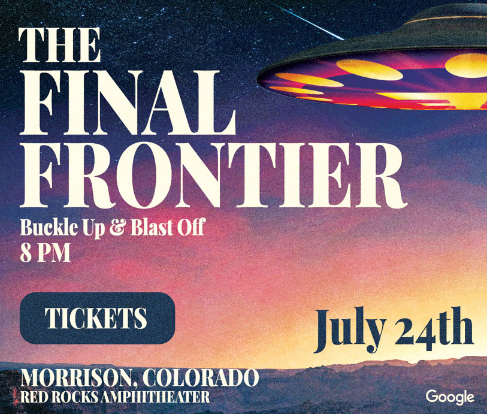
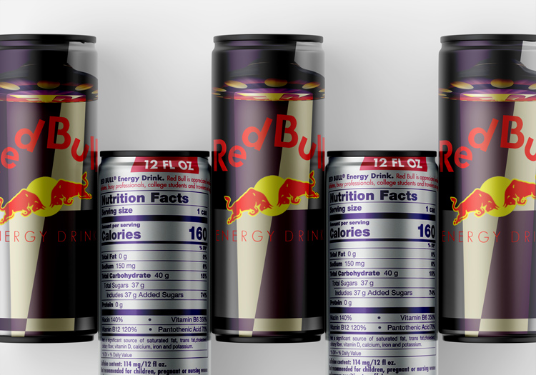

The Assignment
This quarter, students designed collateral for a fictitious music festival. The first project was the design and development of a festival logo — beginning with a student-selected genre paired with a second genre assigned at random. The two genres had to be distinct, and the entire festival identity would grow from that collision.
My Two Genres
I chose Country. My randomly assigned second genre was Techno. From that pairing, The Final Frontier was born — a festival where prairie roots launch into the cosmos.
Below are all the genres students could select from. The two that shaped this project are highlighted.
Mission Statement
The Final Frontier
The Final Frontier is where country roots and techno beats meet in a cosmic collision: a music festival that launches traditions into the stars. From neon lights to starlit nights, we are uniting folks under the night sky for an unforgettable musical experience. The Final Frontier is where the prairie land meets the pulse of the universe.
Creative Concept
The challenge was finding where Country and Techno genuinely meet — not just slapping two aesthetics together, but discovering a shared emotional space. Both genres are rooted in community and the night: honky-tonks and open fields on one side, warehouse raves and festival grounds on the other. The cosmos became the unifying metaphor — vast, open, and experienced best under a dark sky.
Country Roots
Wide open spaces, prairie warmth, and a sense of tradition. The dusty, grounded energy of country music gave the festival its soul and its connection to the land.
Techno Pulse
Neon light, forward motion, and relentless rhythm. Techno brought the futurism — the sense that something electric and otherworldly is happening right now.
The Collision
Where those two worlds meet is the night sky — a starlit canvas that belongs equally to the campfire and the laser show. That overlap became the visual and conceptual core of the festival.
Creative Process
The logo development started with a mind map — pulling imagery from both genres and looking for unexpected overlaps. Stars, satellites, spurs, synthesizers, wide-open sky, strobing light. The frontier framing surfaced early and stuck: the frontier is both the edge of the known American West and the edge of what technology can reach.

From Sketch to Identity
Early sketches explored typographic directions, icon treatments, and color systems that could carry both the warmth of country and the cool glow of techno. The final identity leans on bold, condensed lettering grounded by celestial imagery — a visual language that feels equally at home on a barn wall and a festival LED screen.

Color played a major role in bridging the two worlds. Deep midnight blues and blacks carry the cosmic scale, while warm ambers and dusty golds bring the country warmth back in. Neon accents — the pulse of techno — cut through as highlights without overwhelming the earthy base.
The Work



